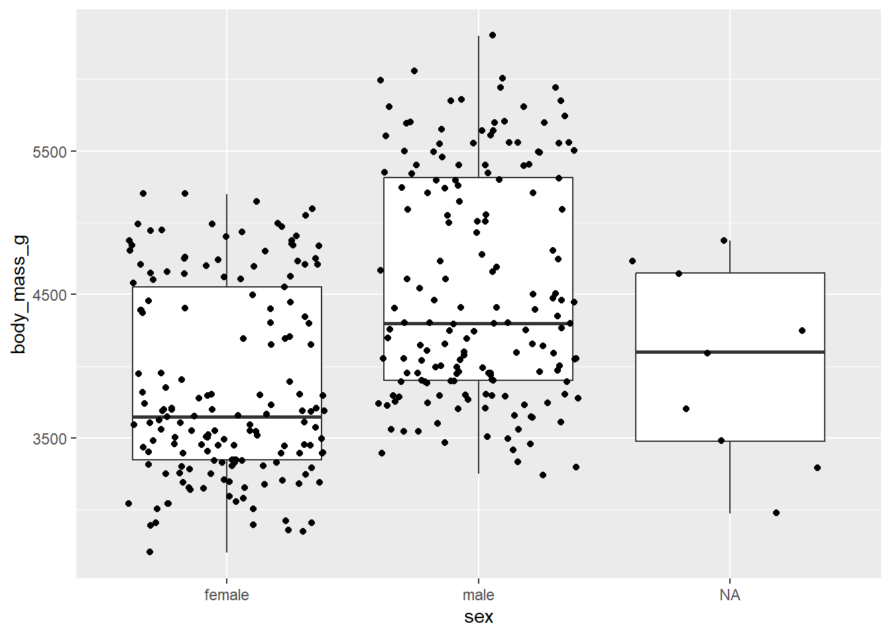
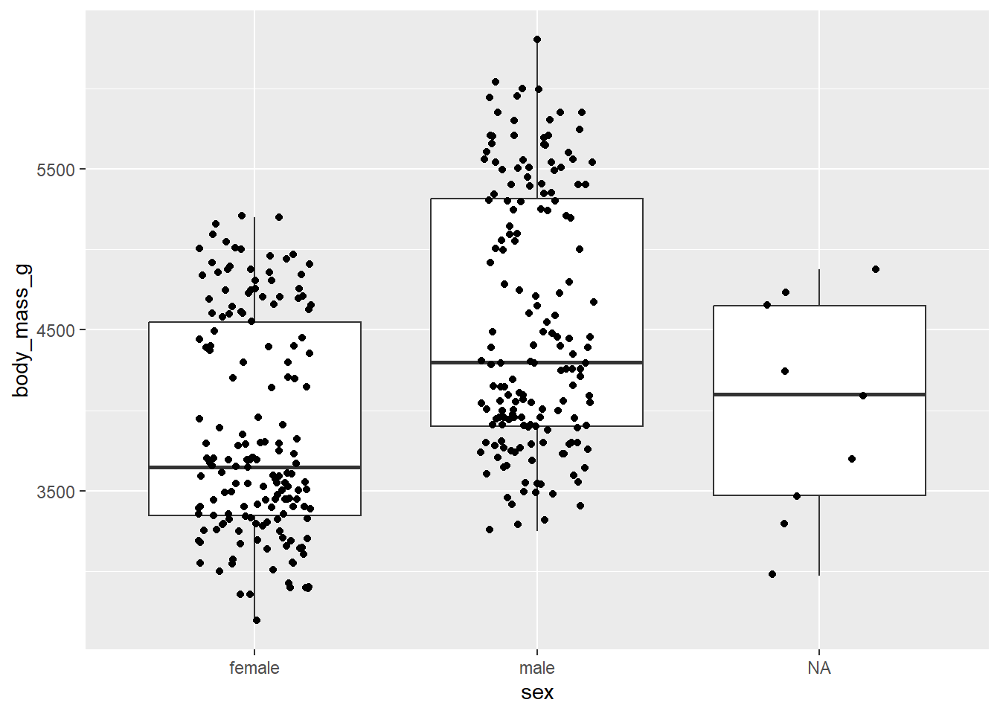

Bonus: A short intro to ggplot2
Joy Nyaanga / 2023-10-26
On day 3 we spent time discussing the {tidyverse} - a collection of R packages that share a common design philosophy, grammar, and structure.
{ggplot2} is a powerful package within the tidyverse for producing elegant graphics piece by piece.
The gg in ggplot2 means Grammar of Graphics, a graphic concept which describes plots by using a “grammar”. Similar to how sentences are composed of various parts of speech (e.g., nouns, verbs, adjectives),
{ggplot2}allows us to create figures using a standard syntax.
According to this concept, a plot can be divided into fundamental parts, mainly: Plot = data + aesthetics + geometry. We will take a look at each of these parts and see how together they build a plot.
Designating data
Like any R package, in order to use {ggplot2} functions, we must first load the library.
library(ggplot2)
Now we can begin to use functions within the {ggplot2} package.
Step one is to tell R to set up a plot.
We do this by calling ggplot2::ggplot().
This will open up a blank plot to the right of your RStudio session under the Plots tab.
ggplot2::ggplot()

Notice that the function we use to create a plot is ggplot whereas the package is called
ggplot2
Now that we have the framework for a plot set, we can specify which data set we are interested in visualizing.
Let’s use the palmerpenguins data set once more.
library(palmerpenguins)
penguins <- palmerpenguins::penguins
head(penguins)
## # A tibble: 6 × 8
## species island bill_length_mm bill_depth_mm flipper_length_mm body_mass_g
## <fct> <fct> <dbl> <dbl> <int> <int>
## 1 Adelie Torgersen 39.1 18.7 181 3750
## 2 Adelie Torgersen 39.5 17.4 186 3800
## 3 Adelie Torgersen 40.3 18 195 3250
## 4 Adelie Torgersen NA NA NA NA
## 5 Adelie Torgersen 36.7 19.3 193 3450
## 6 Adelie Torgersen 39.3 20.6 190 3650
## # ℹ 2 more variables: sex <fct>, year <int>
The first element in data visualization is your data. Lets tell R that we want to plot the data help in the variable penguins.
ggplot(penguins)
I will not actually execute this block, but give it a try yourself. Notice that nothing was added to our blank plot! This is because we must also add the second element of data visualization: aesthetics.
Assigning aesthetics
Aesthetics include things like which variable goes on the X axis, which variable goes on the Y axis, and what size, shape, or color you want your points/lines/bars to be.
Let’s explore the relationship between bill length (x-axis) and bill depth (y-axis) in our penguins data set.
Note: To build layers with ggplot, we use the
+
ggplot(penguins) + aes(x = bill_length_mm, y = bill_depth_mm)
Notice we now have axes labels! But nothing has shown up in the actual bounds of our plot because we are still missing our geometry.
Adding geometric objects
The final element we need to add is a geometric object. Geometric objects define the type of plot we want to make. Let’s try plotting simple points. We will use geom_point().
ggplot(penguins) + aes(x = bill_length_mm, y = bill_depth_mm) + geom_point()

And now we can see our data!
There are several plot types we can create using the {ggplot2} package.
Here are a few key types:
| PLOT TYPES | GGPLOT2 FUNCTIONS |
|---|---|
| Initialize a ggplot | ggplot() |
| Scatter plot | geom_point() |
| Box plot | geom_boxplot() |
| Violin plot | geom_violin() |
| Scatter plot with dodge | geom_jitter() |
| Dot plot | geom_dotplot() |
| Bar chart | geom_bar() or geom_col() |
| Line plot | geom_line() |
| Histogram | geom_histogram() |
| Density plot | geom_density() |
| Error bars | geom_errorbar() |
| Title and axis labels | labs() |
Adding more aesthetics
Now that we have the basics, we can play around with aesthetics and other geometric objects. Let’s start by adding to the aesthetics. Say we were interested in observing the relationship between bill length (x-axis) and bill depth (y-axis) by island.
ggplot(penguins) +
aes(x = bill_length_mm, y = bill_depth_mm, color = island) +
geom_point()
By adding the designation for color to the aes() argument, R not only colors each point by its associated island, but also puts this information in the plot legend.
Note: Typically we place information in aes() when we want to use information that is in our data frame. What if we placed color as an argument in geom_point()? Give it a try.
Layering geometric objects
Not only can we change the aesthetics but we can also change the geometric objects we are plotting. Let’s explore our data using boxplots instead…
Say we are interested in exploring how body mass differed across sex.
ggplot(penguins) +
aes(x = sex, y = body_mass_g) +
geom_boxplot()
Although boxplots are great, they do hide the underlying data. To avoid this, we can also plot each observation as a point on top of the boxplots. This is as simple as adding geom_point() at the end with a +:
ggplot(penguins) +
aes(x = sex, y = body_mass_g) +
geom_boxplot() +
geom_point()
I like to use a geometric object called geom_jitter(). geom_jitter() is similar to geom_point() but won’t result in points laying directly on top of each other
ggplot(penguins) + aes(x = sex, y = body_mass_g) + geom_boxplot() + geom_jitter()Using geom_jitter(), I also like to specify how much wiggle (or jitter) the points have. I like to keep their jitter pretty narrow. This can be changed by adding a width designation:
ggplot(penguins) + aes(x = sex, y = body_mass_g) + geom_boxplot() + geom_jitter(width = 0.2)
Something to keep in mind – the order that you add components to a plot will be the order they are added. As a personal preference I like having points in front of boxplots – this is why I add the boxplot first and the geom_jitter() second.
Adding plot labels
The final thing I want to share is adding axes labels and titles to a plot. For this we use the function labs.
ggplot(penguins) +
aes(x = sex, y = body_mass_g) +
geom_boxplot() +
geom_jitter(width = 0.2) +
labs(x = "Sex", y = "Body mass (g)", title = "Body mass of penguins given sex")
And that is really about it. You can play around with what you want to plot in x and y, as well as aesthetics like size and color.\
alpha just makes objects more transparent. The smaller the alpha the more transparent the object
ggplot(penguins) +
aes(x = sex, y = body_mass_g) +
geom_boxplot(size = 0.5) +
geom_jitter(width = 0.2, alpha = 0.5, aes(color = island)) +
labs(x = "Sex", y = "Body mass (g)", title = "Body mass of penguins given sex")
Putting it all together
With these basics and the powerful functions from {dplyr} for summarizing data, your plotting possibilities are truly endless.
library(dplyr)
penguins %>%
dplyr::group_by(species, island) %>%
dplyr::summarize(avg_body_mass = mean(body_mass_g/1000, na.rm = TRUE)) %>%
ggplot2::ggplot() +
aes(x = island, y = avg_body_mass, fill = island) +
geom_col() +
theme_classic() +
labs(x = "Island", y = "Average body mass (kg)", title = "Average penguin body pass across islands")